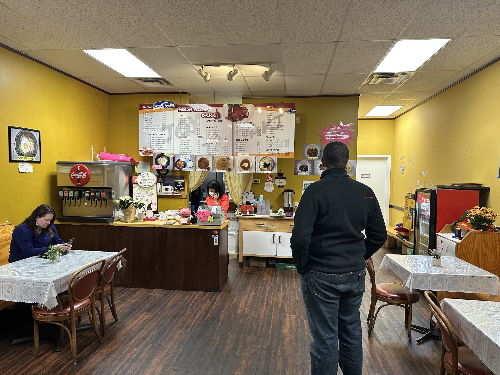

Meet Joy
A neighborhood table
Joy runs this place, and the people who eat here say so.
Inside it is yellow walls, lace on the tables, a drink fountain and the menu boards over the counter. Order at the register, sit down, and the food comes out to you.
Reviewers keep landing on the same word for the owners: hard working.